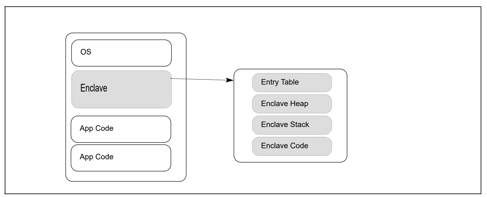
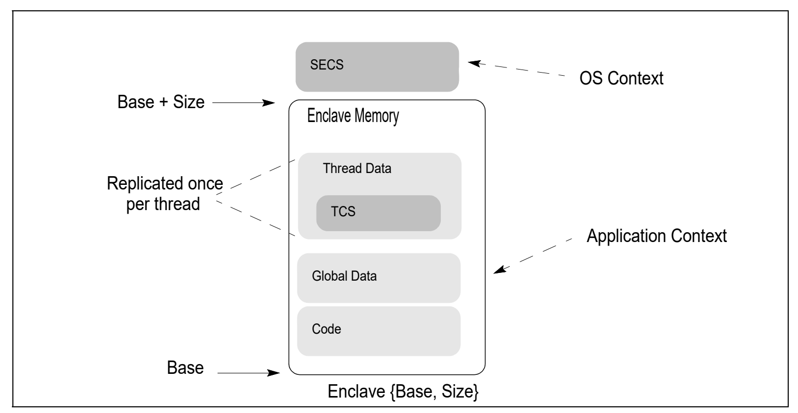
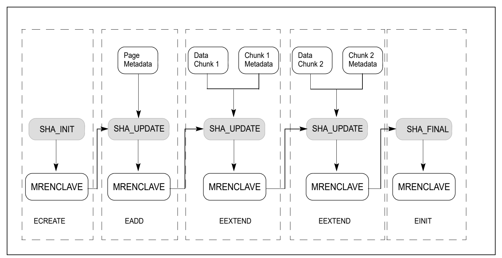
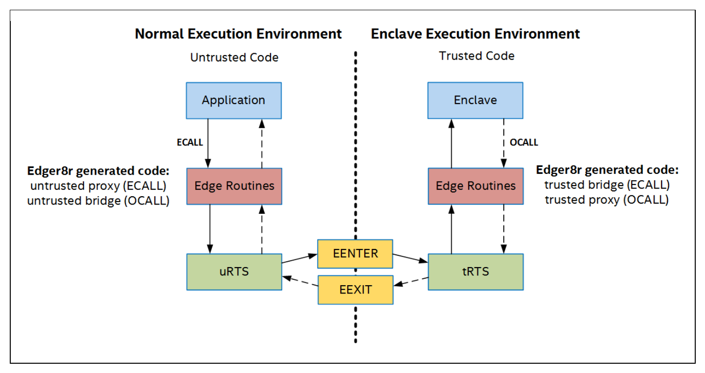
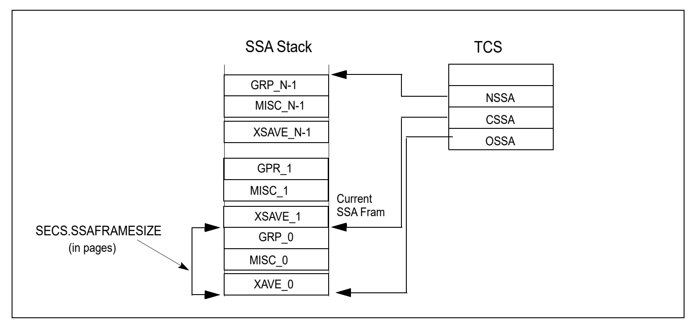
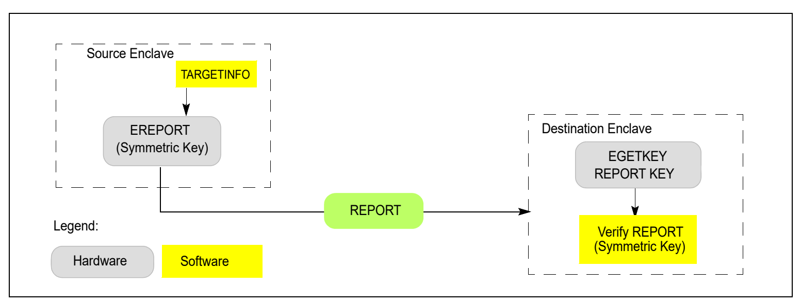
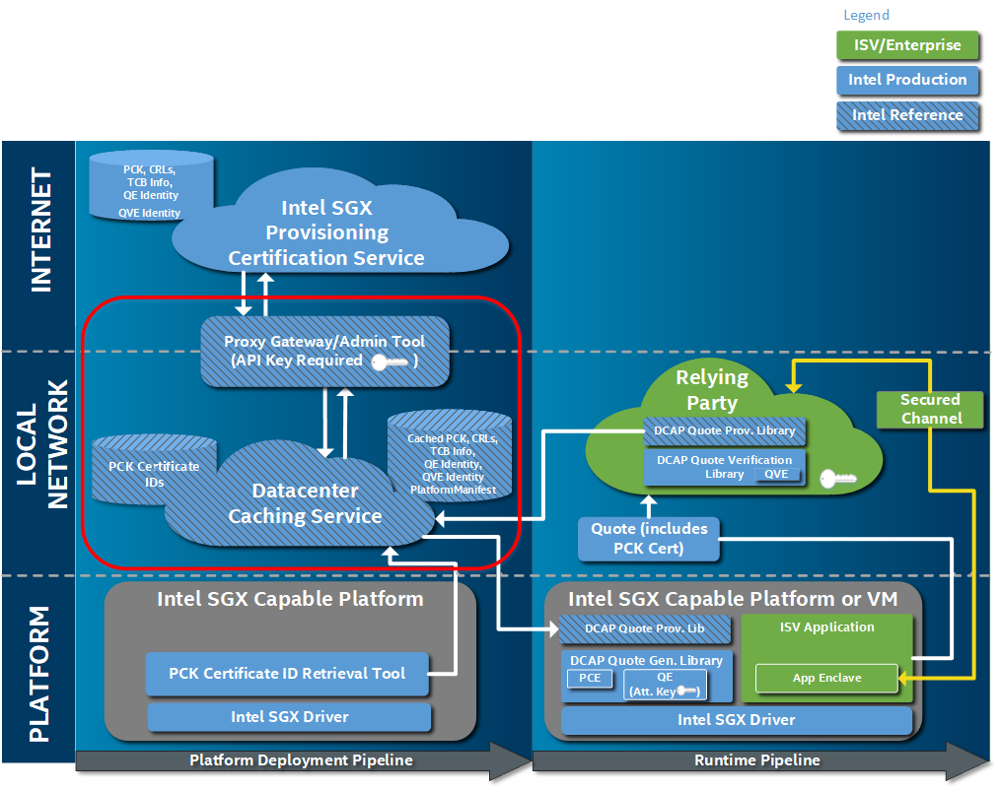
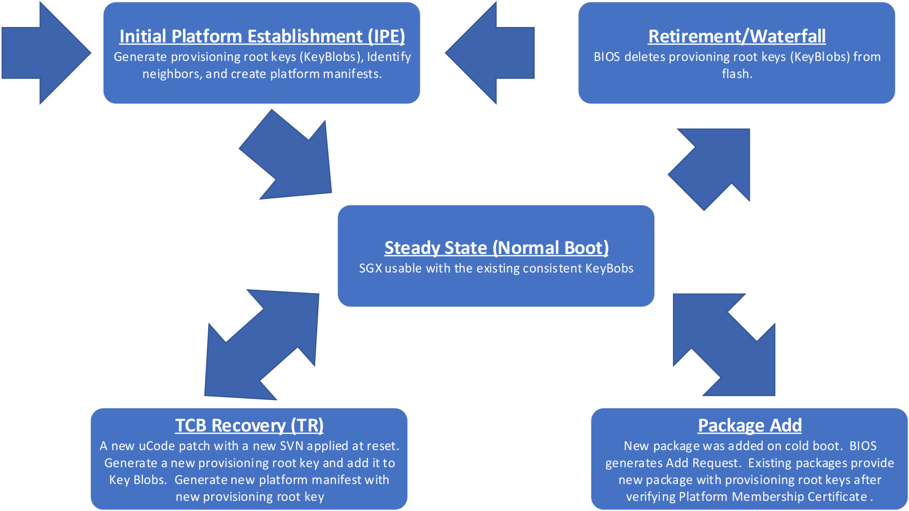
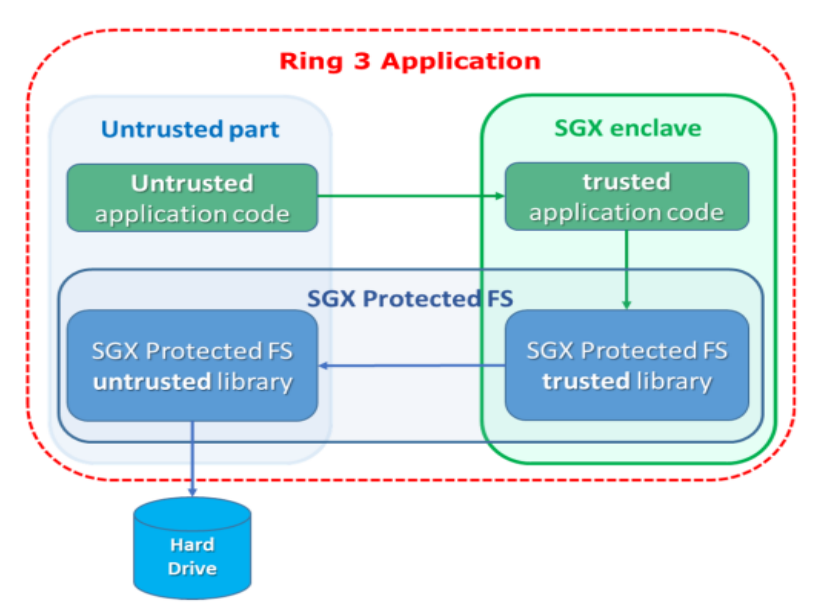

Check the exact processor
SGX support is SKU-specific. Intel lists supported Xeon families and models; older consumer CPUs vary. CPUID leaf 0x12 enumerates SGX capabilities when enabled.
Understand the physical EPC and EPCM checks, how an enclave is measured and initialized, and which instructions cross the boundary.
The OS manages the address space and EPC resources. CPU checks restrict access to an enclave’s private pages. The enclave runtime provides controlled entry points and mediates calls to untrusted code.

“This CPU family supports SGX” does not prove the particular machine exposes a usable enclave facility.
SGX support is SKU-specific. Intel lists supported Xeon families and models; older consumer CPUs vary. CPUID leaf 0x12 enumerates SGX capabilities when enabled.
A capable CPU is not sufficient if platform firmware disables SGX or allocates no EPC. BIOS policy can also affect launch control and EPC size.
The Linux SGX driver exposes /dev/sgx_enclave for enclave construction. A missing device can mean unsupported hardware, disabled firmware, or missing kernel support.
SGX1 provides the baseline enclave lifecycle. SGX2 adds dynamic page management; software must check what the running platform enumerates.
Hardware references: Intel processor list and Linux SGX guide.
Follow one page from ordinary memory into EPC and through CPU metadata checks.

Do not memorize opcodes first. Group the leaves by who executes them and which state transition they make.
| Operation | Representative leaves | What the kernel or VMM does |
|---|---|---|
| Build and initialize | ECREATE, EADD, EEXTEND, EINIT | Create the SECS, populate EPC, measure the initial image, then validate SIGSTRUCT and complete initialization. |
| Page out and in | EBLOCK, ETRACK, EWB, ELDU, ELDB | Block the page, track stale translations, write an authenticated encrypted page image, and reload it as unblocked (ELDU) or blocked (ELDB). |
| Reclaim | EREMOVE | Remove an EPC page. Teardown removes child pages before their SECS. |
| SGX2 | EAUG, EMODPR, EMODT | Add a pending page, restrict EPCM permissions, or change the page type. The matching enclave operation accepts changes where required. |
| Debug and virtualization | EDBGRD, EDBGWR, ENCLV | The debug leaves access debug enclaves. ENCLV is a separate CPL 0 instruction for SGX virtualization leaves in VMX operation, subject to hardware and VMCS controls. |
| Execution context | Representative leaves | What the operation does |
|---|---|---|
| Outside the enclave | EENTER, ERESUME | EENTER starts at the selected TCS entry point. ERESUME restores the interrupted execution from its saved SSA frame. |
| Inside the enclave | EEXIT, EREPORT, EGETKEY | Exit explicitly, produce a target-bound local REPORT, or derive an authorized key such as a report or sealing key. |
| SGX2 · inside the enclave | EACCEPT, EACCEPTCOPY, EMODPE | Accept pending pages or changes, accept a pending page with a copy, or extend EPCM permissions. OS page permissions still apply. |
| AEX-Notify · inside the enclave | EDECCSSA | On supported platforms, decrements TCS.CSSA for the enclave’s AEX notification or exception handling flow. |
The instruction selects a leaf using EAX. The leaf determines the register operands and requires the appropriate enclave context. Optional leaves depend on enumerated CPU features.

Intel SDM Volume 3D, Chapter 41 · SGX Instruction References ↗
AEX and resumption are especially important when reasoning about interrupts and untrusted scheduling.

| Path | Execution sequence |
|---|---|
| ECALL | Host proxy → untrusted runtime (uRTS) → EENTER using a TCS → trusted runtime (tRTS) and bridge → enclave function → copy permitted output → EEXIT. |
| OCALL | Enclave proxy marshals a request into untrusted memory → EEXIT → host callback performs I/O or a syscall → runtime re-enters with EENTER → enclave checks returned values. |
| AEX / ERESUME | An interrupt or exception makes the CPU save state into an SSA frame and present synthetic register state outside. The OS handles the event. On the normal resume path, the AEP trampoline outside the enclave executes ERESUME to restore state. |

Read the EDL annotations [in], [out] and [size=…] alongside the generated bridge. Validate lengths, copy untrusted input into enclave memory before using it, and check results after each OCALL. Intel SDK SampleEnclave ↗
The enclave protects direct access to its pages; its host interface and side-channel behavior are separate design work.
Keep secrets and only the code that needs them. Validate every value returned by host calls. Minimize runtime and serialization logic that must be trusted.
The OS and host process can schedule, interrupt and feed input. Page-fault patterns, caches and timing may reveal information unless the application accounts for them.
A local REPORT uses a symmetric MAC tied to a target enclave. The target verifies it and decides whether to trust the source.

TARGETINFO. Enclave A passes it and 64 bytes of REPORTDATA to EREPORT. The CPU puts A’s identity and attributes in the report and computes a MAC for B.EGETKEY with the REPORT key selector and the report’s KEYID to derive the verification key. It checks the MAC and evaluates MRENCLAVE, MRSIGNER, attributes and security version according to policy.REPORTDATA. The Intel SDK LocalAttestation sample combines local reports with Diffie–Hellman to establish a session key.In the DCAP ECDSA path, an architectural Quoting Enclave turns local evidence into a signed Quote for an external verifier.

| Stage | Actor and checks |
|---|---|
| Challenge and local report | The remote verifier issues a fresh challenge. The application obtains QE target info (for example, sgx_qe_get_target_info) and asks its enclave to create an EREPORT for the QE. Bind the challenge and any session key material to REPORTDATA according to the protocol. |
| Generate Quote | The QE verifies the local report and signs a Quote with its attestation key. The Quote carries the application report body and certification data that lets a verifier link the attestation key to a PCK certificate. |
| Verify and apply policy | DCAP QVL verifies the signatures and collateral, including the PCK chain, CRLs, TCB Info and QE Identity. The relying party evaluates the verification result and collateral expiration, checks challenge and key binding, and applies its policy to the enclave identity, SVN and DEBUG attribute before provisioning application secrets. |
In the DCAP samples, follow sgx_qe_get_target_info, the application enclave’s report creation, sgx_qe_get_quote_size and sgx_qe_get_quote. On the verifier, sgx_qv_verify_quote returns a quote verification result and a collateral expiration status. The sample applications demonstrate the library calls. The challenge, channel binding and acceptance policy belong to the application protocol.
Intel DCAP quote generation sample · Quote verification sample · Intel PCCS design guide
Architectural Enclaves (AEs) are special-purpose enclaves used by the SGX platform software. The DCAP provisioning chain ties a QE’s attestation key to a genuine platform and TCB.
| Component | Role |
|---|---|
| QE · Quoting Enclave | Authenticates the application’s local REPORT and signs the Quote with the QE attestation key. |
| PCE · Provisioning Certification Enclave | Derives the platform and TCB-specific PCK and uses it to sign the QE report that binds the attestation public key. |
| QvE · Quote Verification Enclave | Optionally runs quote verification inside an enclave and produces a local report for a trusted consumer. The host-side QVL can also verify without a QvE. |
| AESM · Architectural Enclave Service Manager | Host daemon that coordinates architectural enclave services in out-of-process configurations. In-process DCAP quoting loads the quoting components through the library. |
| Historical AEs | The Launch Enclave (LE) supplied launch tokens on legacy configurations. PvE and PSE served EPID provisioning and legacy platform services. The modern DCAP path uses the ECDSA QE and PCE. |
During platform provisioning, a platform owner retrieves Intel-signed PCK certificates and collateral from the Provisioning Certification Service (PCS), typically through a datacenter PCCS cache. The Quote Provider Library (QPL) is the software interface for fetching that material. The PCK certificate contains the public key and certification metadata. The PCK private key stays in the hardware-backed PCE path.
On a single-package platform, the certificate request uses platform identification such as encrypted PPID, together with CPU SVN, PCE SVN and PCE ID. On a multi-package platform, Intel first needs a registration record for the assembled system. The PPID identifies the platform. The PCK signs the QE report, and the separate per-package Platform Registration Key (PRK) signs registration evidence.
Application secret provisioning happens after attestation. For example, a client releases an application key over a channel whose enclave public key is bound to the verified evidence.
Intel SGX Linux package and AE map · Intel provisioning terminology
A multi-package system establishes shared platform keys across physical CPU packages. Registration certifies that composition before the platform can obtain PCK certificates.

SgxRegistrationServerRequest UEFI variable. The Multi-Package Registration Agent can relay the request to Intel Registration Service. An operator can also collect the manifest and use the indirect certificate provisioning flow.
Each example protects a specific operation: a database query, use of a key, or a contact lookup.
| Example | What runs in the enclave | Deployment context |
|---|---|---|
| Azure SQL Database · Always Encrypted | The enclave processes column keys and performs supported operations on sensitive values. A client driver uses Azure Attestation before enabling SGX enclave computations. | Microsoft lists October 31, 2027 as end of support for its SGX enclave configuration. Microsoft Learn ↗ |
| Fortanix Data Security Manager | On SGX deployments, the service uses keys and performs cryptographic operations within the enclave. Its attestation tooling checks the running DSM identity and platform. | See the vendor’s DCAP workflow for SGX deployments. Fortanix ↗ |
| Signal · Private Contact Discovery | The documented design matches contacts inside a server-side enclave. Path ORAM obscures access patterns to the lookup data. | Signal engineering write-up, August 2022. Signal Engineering ↗ |
